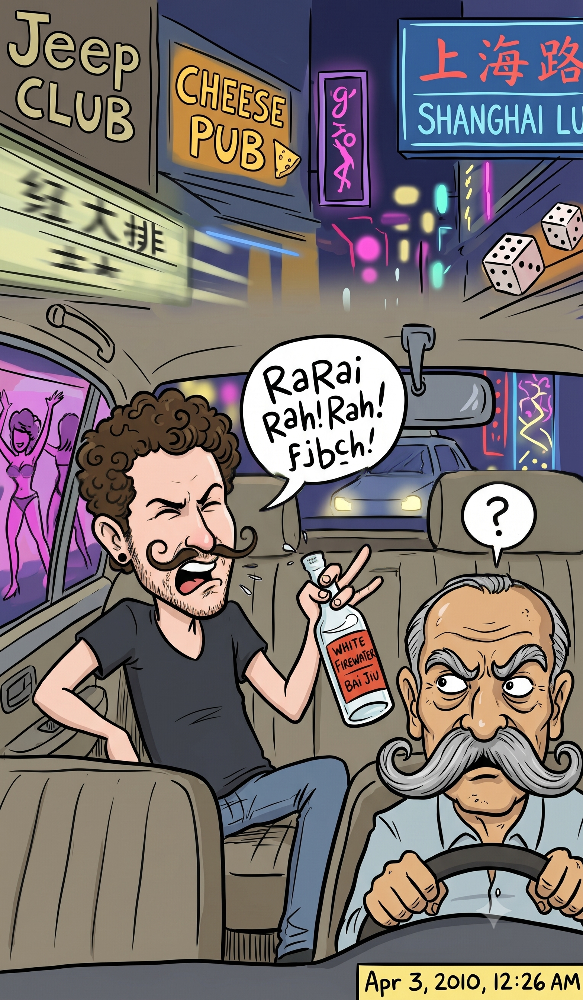

It Gets Easier to Talk to Cabbies
Originally written April 2010 • Uploaded to Facebook on Apr 3, 2010, 12:26 AM

You wait outside for the light to change. A red light approaching you in this city means one of two things: either you are crossing the street and are about to be pulverized by a psycho cab driver, or you are standing on a curb waiting for a psycho cab driver to take you somewhere. You hop into the back seat and announce your destination, only to be greeted by a faint, reflexive expression of doubt. When the driver asks where you are going in a sequence of grunts and growls, you are supposed to answer in kind—by grunting and growling right back. If you don't speak this specific dialect, they will drive you remarkably far from where you are actually trying to go, and comfortably charge you full price for the detour. It's a simple lesson in local cab linguistics.
Let’s say you want to go somewhere on Shanghai Lu. A regular foreigner would try to say something logical like *“Shanghai Lu,”* but your driver will interpret that as *“Rarai Rah”* or even *“BruaBrua Ba.”* You will quickly notice that neither of these expressions sounds remotely like the street name, but you nod your head and hope for the best. However, after a few rounds of the now-infamous *Baijiu*—the local white firewater—your tongue becomes just sloppy enough to master the exact same dialect. Instead of enunciating Shanghai Lu or Fuzimiao (the Confucius Temple), you will naturally say *“Nanai Ru”* or *“Uzimao.”* The driver will flash a knowing smile, and inevitably, you will land precisely at your destination. I am slowly learning how to curl my mustache to fit the part.
Last night, much to the initial dismay of my companions, I decided to break away from our baseline routine and hunt for a new adventure—venturing to a corner of the city where few foreigners have set foot before. As I’ve mentioned before, we have fallen into comfortable loops where we always end up in the exact same spaces: the 1912 commercial district packed with carbon-copy nightclubs and a prominent KFC; the Castle Bar, which serves as a friendly pub, nightclub, and chaotic makeout joint all rolled into one; or, if we are incredibly lucky, someone’s apartment where the neighbors will get pissed off early, though rarely early enough to actually summon the police. Because a friend of mine from Shanghai was visiting and I was thoroughly exhausted by the redundancy, we set out to find greener pastures.
My definitive first choice for the night was a venue called Tequila, a spot with a completely schizophrenic online description. Some expat forums labeled it a shady gangster hangout, while other websites declared it the premier place to be for foreigners. Unfortunately, Tequila has ceased to exist—or at least that was the latest operational update from the curb. So, no gangsters for me. Instead, we shifted gears and decided to track down the Cheese Pub, a homely little spot I had spotted during one of my recent bicycle rides. Cheese Pub turned out to be completely devoid of human life, so our stay there lasted roughly two seconds. That was when I pulled the ace right out from under my sleeve.
On one of the local expat boards, I had read about a venue called Jeep. The place was recognized for its Vegas-style entertainment layout, loudly advertising gogo dancers, pole routines, a pneumatic dancing floor, and China’s largest indoor LCD display. We assumed we would be in a tough spot if we showed up, bracing ourselves for astronomical cover prices and elitist, unfriendly staff. But as with everything in China, what is advertised is rarely what you actually get. We were disappointed to discover there was no pneumatic dance floor; it was just a massive warehouse hall packed with low tables where patrons sit, drink, get completely messed up, and play dice. Nobody was dancing. As for the rest of the amenities, however, the ad held up: a massive, towering LCD screen, hyperactive gogo dancers, wild pole acrobatics, and remarkably friendly people.
We walked in, navigating an initial wave of *“what on earth are these foreigners doing here”* looks from the staff, and stepped into the main hall. Attempting to look cool, I confidently offered to buy the first round of beers, only to be hit with a wave of shame and dismay when my credit card was flatly declined. I was already incredibly short on cash—effectively flat broke. Fortunately, my friend stepped up and lent me some bills, and there we stood right next to the bar counter, drinking cold Coronas.
A minute later, my friend noticed a group of locals signaling for us to join their table. I figured, *why not*, and we marched over. We were greeted by two guys—one exceptionally shy and the other not shy in the slightest. Resting on their table was a bottle of cheap, unbranded "whiskey" with no real label, a standard plate of sliced fruit, a bowl of sugar-coated peanuts, and a dish of crunchy snacks that looked identical to Cinnamon Toast Crunch. I was genuinely excited about the cereal. As with most clubs here, it is customary for parties to have their individual bottles and pitchers right at the table, mixing the liquor with sweet iced tea. The pitchers at this table, however, were filled to the brim with beer—well, after the first round, they were. I have no clue what brand it was, but I am entirely certain it was the cheapest variety of Tsingtao available.
It is also a binding social custom that if a table invites you over, you must enthusiastically drink whatever is offered to you. The protocol demands that you pound glass after glass with vicious abandon—not pacing yourself, but drinking fast. In the span of a single hour, I estimate we pounded roughly eleven beers each, pushing the collective glass count past fifty. My friend insisted he was moving even faster, downing a proxy glass between every round the rest of the table took. So you smile, you raise your glass, you clink, and you drink. Pound, pound, pound, pound, pound. We pounded beers, danced, and smiled at our hosts. The rest of the room stared at us because we were the only human beings actively dancing in the venue. Suddenly, a bizarre track came over the sound system—some kind of weird, aggressive West-German techno packed with the words *“Scheißer”* and *“Hammer, hammer, hammer.”* I am completely convinced the DJ dropped that track specifically for us, much like they always play American country music the second I step into the Tibetan bar.
We kept right on dancing, thoroughly enjoying the spectacle, watching the largest LCD screen in China split directly down the middle to reveal a stage of really bad dancing, weird music, and more beer flowing. I snacked on the Cinnamon Toast Crunch, which tasted exactly like the real thing, save for a distinct shrimp aftertaste—which was, oddly enough, delicious. Over the two hours we hung out, we were approached by a revolving door of waiters, a guy with a professional camera, a drunkard or two, and a couple rumored to be friends of our hosts. We took an array of weird photos, flashing the peace sign in the classic Japanese manner, alternating between smiling and looking intensely sad, striking absurd poses just for the sake of being the solitary foreigners in the room while no one else knew what was happening.
There was one element of the layout that left me completely stunned, however. After a while, the gogo and pole routines took a highly unconventional turn. For one of the musical numbers, two performers were working the poles—one on the left side of the stage and one on the right. Both looked identical from a distance and were executing roughly the same choreography, up until a certain structural shift in the music. Suddenly, the performer on the right side began pulling off an array of insane, high-velocity flips and gravity-defying acrobatics rarely witnessed in a standard club. I was completely floored; this person could easily perform for Cirque du Soleil any day of the week.
We watched the routine, and I turned to my friend and said, “Wait a second, look closer. There’s something highly different going on here.” I focused my eyes on the stage and spotted the definitive difference. While the performer on the left was beginning to falter slightly, the aerialist on the right was flawlessly holding the acrobatics—and he was a man wearing some exceptionally tight clothes. Whether it was pure physical acrobatics or a clever trick of the evening light, I don't know, but I was completely unaware that this venue was cool with showcasing a male pole dancer. It caught me entirely by surprise, given how structurally conservative China can be, but also because times are exceptionally rare at these clubs where you see independent girls just dancing or having a good time with their friends. If you spot girls at a club like this, chances are they are working as escort girls. And on this particular night, there wasn't an independent girl in sight.